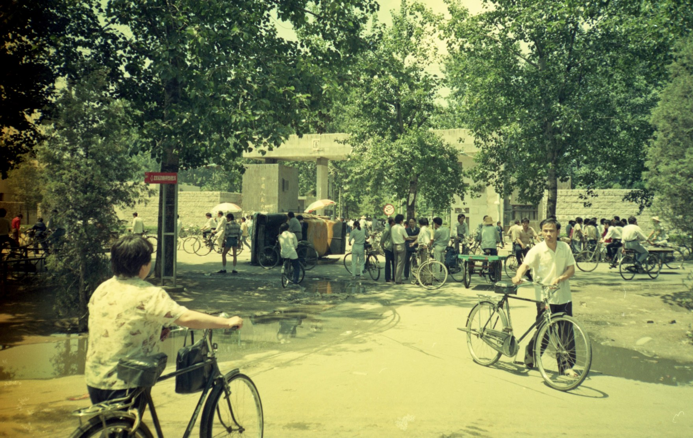

Renmin University’s east gate
中国人民大学东门

A burned-out car stands outside the east gate of Renmin University in the days after the crackdown.
镇压后的几天，一辆烧毁的汽车停在中国人民大学东门外。
Photo record
- Date
- June 7–11, 1989
The photographer’s description gives this range. The Commons date field lists June 7.
- Location
- Renmin University east gate, Beijing
- Photographer
- Daiwenchen
- Source
- Wikimedia Commons record Full-size source file
- Reuse
- CC BY-SA 4.0
The archive uses resized copies of the Wikimedia Commons file.